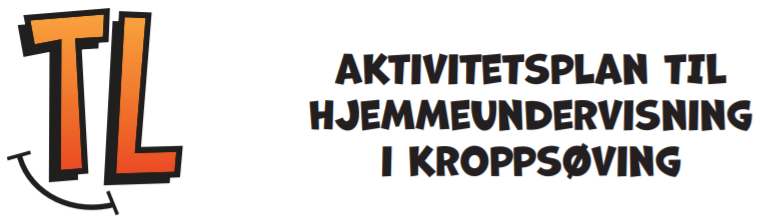

21.04.2020
God morgen alle sammen🌞
Dagens plan finner du her. Husk samfunnsfagtime på teams kl 10.00!
Ine, Ole-Kristian og Thor-Ole
20.04.2020
God morgen 🌞
Ny ukeplan er lagt ut både her og på teams. På denne siden finner du den under UKEPLAN i menyen. For å kunne trykke på lenkene i ukeplanen må du laste ned planen.
PS: Samfunnsfagtime på teams, tirsdag kl. 10.00, og norsktime på teams, torsdag kl. 10.00. Husk å bli med i møtene litt før kl. 10.00, slik at vi kan starte presist kl. 10.00. Vi gleder oss til å se dere!
Ine, Ole-Kristian og Thor-Ole
17.04.2020
God morgen alle sammen🌞
Dagens plan finner du her. Husk å send naturbildet til Thor-Ole hvis du vil at han skal legge det ut på nettsiden. Ønsker alle en god fredag og (snart) en god helg!
Ine, Ole-Kristian og Thor-Ole
16.04.2020
Ine har laget en video med instruksjoner og tips til collage-prosjektet i Kunst & Håndverk!
God morgen 🌞
I dag er det teams-møte kl. 10.00. Ine informerer dere om K&H-oppgaven dere skal starte på i dag og jobbe med i noen uker fremover.
Ellers i dag skal dere arbeide videre med engelsk på Salaby. Ring eller send Thor-Ole en melding på engelsk i chatten, hvis du vil!
Ikke glem å bevege deg i dag: Se ukeplan for tips!
Ine, Ole-Kristian og Thor-Ole
14.04.2020
God morgen 🌞
Velkommen tilbake fra påskeferie! Det blir en kort uke. Ny ukeplan er lagt ut både her og på teams. På denne siden finner du den under UKEPLAN i menyen. For å kunne trykke på lenkene i ukeplanen må du laste ned planen.
PS: Teams-møte torsdag kl. 10.00! Vi går gjennom opplegg for kunst & håndverksprosjekt.
Ine, Ole-Kristian og Thor-Ole
03.04.2020
God morgen 🌞
Husk at det er frivillig møte på Teams i dag kl: 13. Ellers skal du jobbe med matematikk, lese 30 min i egen bok, skrive en tekst (oppgaven finner du nederst på ukeplanen) og gjøre en uteaktivitet. Ellers kan du også jobbe litt med koding hvis du har lyst til det. Send teksten du skriver til en av lærerne. Enten på chat eller mail. God fredag!
Ine, Ole-Kristian og Thor-Ole
02.04.2020
God morgen 🌞
I dagens første økt skal du arbeide med temaet nettvett. Se filmer, les tekster og gjør oppgaver på Salaby. I engelsk skal du fortsette å arbeide på Salaby. Bonus-utfordring: ring Thor-Ole på Teams, og ta en kort prat på engelsk. I fysisk i dag skal du teste om du har blitt noe sterkere siden forrige uke. Lykke til i dag! 😊
Ine, Ole-Kristian og Thor-Ole
01.04.2020
God morgen!
I dagens mattetime skal dere enten jobbe på Khan Academy eller i Multi5a. I norsk skal dere lese en tekst som heter "Jeg er in love", og svare på oppgaver til teksten. I KRLE er temaet fortsatt Islam, og du skal lage ditt eget tankekart. Til slutt er det litt fysisk. Du finner ukeplanen med oversikt over sidetall og oppgaver under "filer" på Teams, eller ved å gå til "ressurser" i menyen på denne nettsiden..)
Hilsen
Ine, Ole-Kristian og Thor-Ole
31.03.2020
God morgen!
God morgen alle sammen I dag er det naturfag, lesing, samfunnsfag og fysisk på planen. Du finner ukeplanen med lenker til det du skal gjøre under "filer" eller på 5. trinn sin nettside. Husk å send svarene på samfunnsfagoppgavene til Ole-Kristian. Håper dere får en fin dag!
Hilsen
Ine, Ole-Kristian og Thor-Ole
30.03.2020
Ny ukeplan er lagt ut både her og på teams. På denne siden finner du den under "UKEPLAN" i menyen. For å kunne trykke på lenkene i ukeplanen må du laste ned planen.
Ressurser til både skriveoppgave i norsk og oppgave i samfunnsfag ligger under "ressurser" i menyen.
Vi sees på teams!
Hilsen
Ine, Ole-Kristian og Thor-Ole
26.03.2020
I dag skal vi ha et nytt morgenmøte for de som vil. Elevene må da være tilgjengelig på Teams kl. 9. Oversikt over plan for dagen finner dere på nettsiden, Teams eller Skolemelding fra søndag. Ønsker alle en fin dag!
Hilsen
Ine, Ole-Kristian og Thor-Ole
26.03.2020
Good morning, everybody! I hope you're all doing fine. Today You're going do some work over at Salaby. Focus on learning to tell the time when it`s a quarter past (kvart over), half past (halv), a quarter to (kvart på) and a full hour (for instance. 5 o' clock). Let us know in teams if you need any assistance :)
Ikke glem fysisk aktivitet. I dag kan du teste deg selv for å se hvor mange push-ups og sit-ups du klarer. Du kan også teste deg selv i hvor lenge du klarer å stå i planke. Husk rett overkropp både når du gjør push-ups og planke. Lykke til!
25.03.2020
Godt oppmøte på video-møte på Teams i dag. Lykke til med dagens gjøremål, og ta kontakt med oss på mail og/eller i teams om dere trenger hjelp med noe.
24.03.2020
God morgen. I dag er det naturfag og samfunnsfag på planen. Husk å logg inn på Teams, og skriv «Hei» i chatten til GAM2009. Vi kommer til å være tilgjengelig på Teams for å hjelpe til med oppgaver og svare på spørsmål. Ønsker alle en fin dag!
Ole-Kristian, Ine og Thor-Ole
22.03.2020
Ukeplan for uke 13 ligger nå ute.
Vi kommer til å starte å ta i bruk appen Microsoft Teams. Da vil det bli lettere å kommunisere med elevene, dele dokumenter og arbeide med oppgaver. Så vi kommer til å bruke litt av denne uka til å bli kjent med appen 😊 Elevene logger seg inn med sin feidebruker og er lagt til i klassens team. Onsdag morgen vil det være morgenmøte på Teams (for de som vil) med gjennomgang av dagen, mulighet til å stille spørsmål og lignende. I tillegg vil Ole-Kristian eller Ine være tilgjengelig for chat og videochat for elever som har spørsmål mellom 10:00 og 12:00 hver dag.
På Khan Academy kan elevene jobbe fritt med oppgaver i matematikk. For mattetimene vil de få tildelt oppdrag av lærerne som de skal gjennomføre. Det er fine forklaringer og forskjellige typer oppgaver på siden, og elevene kan se sin egen fremgang og samle ferdighetspoeng som kan være motiverende. Lærerne kan se hva som er gjort, og hvordan elevene gjør det.
Vi har forståelse for at det kan være vanskelig og uvant for både voksne og barn å jobbe hjemmefra. Gjør det dere får til! Så ikke vær redd for å ta kontakt med oss hvis dere lurer på noe, eller om det er noe vi kan hjelpe til med. Et lite tips er å la elevene samarbeide med oppgavene ved å bruke for eksempel Facetime, Skype eller WhatsApp. Skolen har mulighet til å låne ut iPad, så ta kontakt med oss om dette er noe dere trenger. Ellers oppfordrer vi alle til å ta gode pauser, gå tur i nærområdet for frisk luft og gjøre hyggelige ting sammen hjemme 😊
Mvh Ole-Kristian, Ine og Thor-Ole
20.03.2020
I dag er det matte, lesing, KRLE og fysisk på planen. Oppgavene i matematikk finner du på side 84 i Multi 5a og her. I KRLE skal dere arbeide med tekst og oppgaver på Salaby. Vi håper første uke med hjemmeundervisning har gått fint. Ikke glem å ta en kikk på elevarbeidene. Vi har lagt til flere av de flotte bildene deres. God helg, og ta vare på hverandre!😊
Mvh Thor-Ole, Ole-Kristian og Ine
19.03.2020
I dag er det norsk, lesing, engelsk og litt fysisk på planen. Teksten du skriver i norsk kan du gjerne dele med Ine på mail hvis du har mulighet. Enten ved å ta bilde, eller å sende word-dokument. Vil også minne om live undervisning på Elevkanalen fra kl 12-13. Sendingene vil ta for seg temaer i naturfag og samfunnsfag. Husk å sjekke tips til arbeid med animasjonsfilm.
Vi ønsker dere en fin dag!
Ine, Ole-Kristian og Thor-Ole
18.03.2020
Trenger du tips om oppsett av kameraet i arbeidet med animasjonsprosjektet ditt, klikk her.
TV2 skole - Elevekanalen sender direkte alle hverdager. Klikk på bilde for mer informasjon.
Hei alle sammen!
I dag står det matematikk, norsk og k&h på arbeidsplanen. Dere som ikke har hentet bøker kan laste ned sidene som trengs under "ressurser" i menyen. Send avgårde en melding eller mail til oss om det er noe dere lurer på. Minner om at vi gjerne tar imot arbeid dere gjør på mail, og hvis dere har noe dere vil vise fram til alle så kan vi legge det ut her på nettsiden.
Ine, Ole-Kristian og Thor-Ole
17.03.2020
Christian har sendt ut dette skrivet med forslag til fysisk aktivitet. Klikk for å se dokumentet.
Hei! Vi har fått inn flere mailer fra dere med både tegninger og annet
skolearbeid. Dere er superflinke! Fortsett gjerne å
sende oss mailer og fortell om hva dere gjør og har gjort. Hvis dere sender oss tegninger
kan vi legge de ut på denne siden,
med deressamtykke, selvfølgelig.
Ine, Ole-Kristian og Thor-Ole
16.03.2020
Klikk på "Ukeplan" i menyen øverst på siden for å finne ukeplanen. Vi er i en spesiell situasjon, og vi har stor forståelse for at det kan være vanskelig å få gjennomført dette hjemme. Gjør det dere får til, og det er mer enn godt nok 😊 Ta gjerne kontakt med oss om dere lurer på noe! Vi har satt opp en plan for fag og oppgaver for hver dag den første uka. Vi kommer også til å legge ved et infoskriv med nyttige linker til gode læringsnettsider og forslag på andre aktiviteter man kan gjøre hjemme. I tillegg ønsker vi at elevene de neste to ukene arbeider med et prosjektarbeid i Kunst og håndverk. Denne er beskrevet nedenfor:
Halve trinnet har den siste tiden begynt å lage animasjonsfilmer. Derfor har mange allerede litt fått testet ut denne appen, og vet hvordan de redigerer. Stop Motion Studio er en enkel (og gratis) app, som er lett å ta i bruk. Man trenger ingen kunnskap fra før, og man lærer det meste bare ved å prøve seg litt frem. Du kan både bruke mobil eller nettbrett. Oppgave til elevene: Lag deres egen animasjonsfilm. Temaet for filmen er vennskap. Du velger selv om du vil bruke dukker, tegne, leire eller noe annet. Lag filmen i Stop Motion Studio, og rediger den i iMovie hvis du har mulighet til det. Lykke til! Send filmen på e-mail til Ine (hvis du vil) i slutten av uke 13.